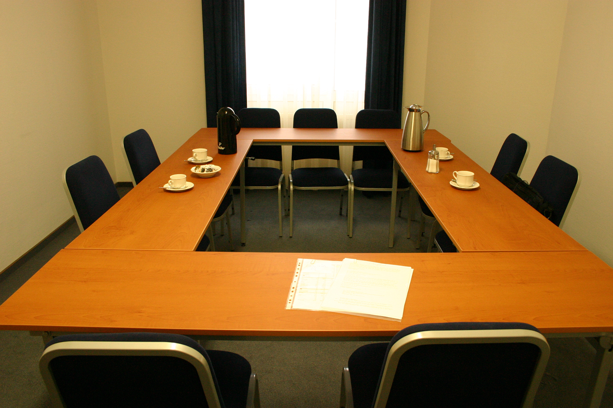

Meetings

This e-learning module demonstrates from the perspective of NDIS participants what effective communication looks like, and how it supports choice and control.
- Accountability
- Personalised Program
- Consistent Support and Motivation
Boardroom
Burn fat through cardio workouts. Experts recommend 150 minutesof cardio each week. We have several equipment choices for your workout.
- Treadmills
- Elliptical Machines
- Exercise Bikes
Personal Training

Our certified personal trainers work with you to help you obtain your fitnessgoals and track your progress. Personal training has many benefits.
- Accountability
- Personalised Program
- Consistent Support and Motivation
Modules
The following are common exercises that weencourage our clients to do as part of their daily exercise routine.
- Burpee
- Burpees are a great full-body exercise to increase your strength andendurance. Begin in a standing position, drop into a squat and extend yourhands forward, kick your feet back and then forward again quickly, and thenjump up from a squatted position.
- Plank
- Planks build your core strength. To perform a plank, get in a push-upposition and rest your forearms on the floor. Hold the position as long as youcan.
- Mountain Climber
- Mountain climbers are a good cardio exercise. Place your hands on thefloor in a push-up position, bring one knee up to your chest, and then switch asquickly as you can (as though you are climbing a mountain).